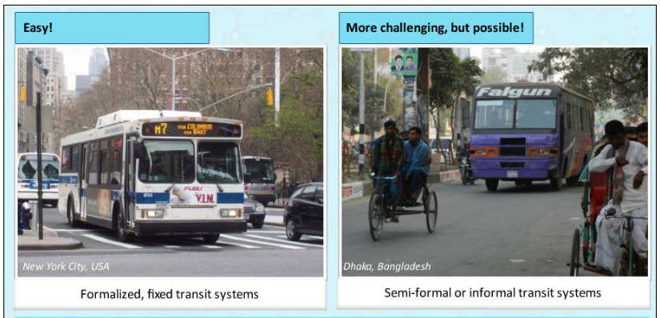
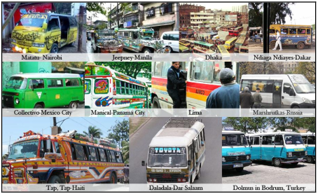

Trip Planner utilizando el estandar GTFS para sistemas de transporte informal
INFORMATICA FCPN UMSA
La Paz Junio 2020
INTRODUCCION
- Agencias de transporte en todo el mundo proveen información de paradas, rutas, horarios y otros aspectos de sistemas de transporte.
- En el 60% de los asentamientos urbanos del mundo, esta información de transporte es limitada, incompleta o simplemente no está disponible.
- El crecimiento acelerado de estas ciudades genero una gran demanda de servicios de transporte público, que derivo en la proliferación de diversos sistemas de transporte público de naturaleza informal.
Transporte publico: formal vs informal
Como representar la informacion del transporte publico (informal) ?
Estandar GTFS
- Estandar diseñado para representar la informacion de sistemas de transporte formal
- Un paquete, dataset o feed de datos GTFS se compone por seis archivos requeridos y otros archivos opcionales.
- Estos archivos describen la informacion del sistema de transporte.
Estandar GTFS

Por que GTFS?

Como hacer accesible la informacion del transporte publico (informal) ?
TRIP PLANNER
Es un motor de búsqueda para encontrar una ruta entre dos o más ubicaciones determinadas, a veces utilizando más de un modo de transporte (multimodal).
- Funcionan (la gran mayoria) utilizando datos en formato GTFS.
- Componentes:
- Backend: Calcula los posibles viajes/rutas entre 2 puntos. (API)
- Frontend: Aplicaciones (web o mobile) que consumen el API de backend
- Problema central
- Objetivo general
¿Cómo utilizar el estándar GTFS para mejorar el acceso a la información de transporte público en ciudades con sistemas de transporte informal?
Adaptar el estándar GTFS en sistemas de transporte informal, para generar datos que puedan ser utilizados en una herramienta trip planner.
- Hipotesis
El uso del estándar GTFS en el sistema de transporte informal de la ciudad de La Paz permitirá la implementación de una aplicación trip planner, para generar las posibles rutas de transporte público entre dos puntos geográficos dados.
- Metodologia de desarrollo FDD
- Modelado de componentes web con WEB-UML

Prototipo
- Representacion/generacion de rutas de transporte publico informal: archivos geojson
- Generacion del feed GTFS: geojson2gtfs
- Trip planner
- Componente Backend:
OpenTripPlanner - Componente Frontend: (cliente web):
SemiFormal-TripPlanner
1. Representacion de rutas de transporte publico informal

Una ruta de transporte informal tiene muchas posibles paradas. Registrando solo una cantidad de estas.

1. Representacion de rutas de transporte publico informal

1. Generacion de rutas de transporte publico informal

1. Generacion de rutas de transporte publico informal


Con una ruta en formato geoJson se generan las entidades GTFS requeridas.
1.1 Almacenamiento/validacion de rutas de transporte publico informal

1.1 Repositorio de rutas de transporte publico informal

2. Generacion del feed GTFS

3. Trip Planner (backend)

3. Trip Planner (web client)

Interaccion entre componentes del prototipo

Pruebas y resultados
- Se archivos geojson para 26 rutas de transporte publico informal y 14 de transporte publico formal.
- En promedio 192 paradas/stops por cada ruta.
- Se almacenaron estos archivos en un repositorio de github
- Se verifico el proceso de validacion de adicion/edicion de archivos de rutas en el repositorio.
- Se genero un feed GTFS con los archivos geojson.
- Se valido el feed GTFS .
Rutas mapeadas a archivos geojson

Validacion de la adicion/edicion de archivos de rutas de transporte (geojson)

Validacion de la adicion/edicion de archivos de rutas de transporte (geojson)

Generacion del feed GTFS

Validacion del feed GTFS

Validacion del feed GTFS

Trip Planner (backend)

Trip Planner (web client)
Resultados de encuestas
| Pregunta | Resultados | |
|---|---|---|
| 1 | ¿Le es útil la información de las rutas de transporte público que encuentra en esta aplicación? | Si: 100% |
| 2 | ¿La aplicación pudo mostrarle las rutas de transporte público que pasan por puntos que marco en el mapa? | Si: 62.5% No: 37.5% |
Resultados de encuestas
| Pregunta | Resultados | |
|---|---|---|
| 3 | ¿Qué tan fácil es utilizar esta aplicación? | Sencilla: 50% Regular: 25% Compleja: 25% |
| 4 | ¿Encontró alguna falla o error utilizando esta aplicación? | Si: 62.5% No: 37.5% |
Conclusiones
- Es posible representar la informacion de rutas de transporte publico informal utilizando archivos geojson.
- Estos archivos geojson pueden ser almacenados, versionados y modificados utilizando un repositorio git.
- Utilizando la aplicacion de consola geojson2gtfs, es posible transformar un conjunto de archivos geojson en un feed GTFS.
Conclusiones
- Es posible utilizar el feed GTFS generado en conjunto con la aplicacion OpenTripPlanner para generar la informacion de rutas de transporte publico.
- Mediante un cliente web es posible acceder a la informacion del sistema de transporte publico formal e informal.
Conclusiones
- Se logro adaptar la informacion de un sistema de transporte informal al formato de la especificacion GTFS.
- Se comprobo que es posible desplegar una aplicacion TripPlanner utilizando la informacion en formato GTFS de un sistema de transporte informal.
Recomendaciones
- La generacion automática de puntos o paradas entre dos puntos de una ruta en el mapa (autoMapping) podria reducir y facilitar el proceso de generacion de rutas.
- Reutilizar los puntos marcados para una ruta en otras rutas que pasen por las mismas direcciones. Esto reduciría drasticamente la cantidad de puntos o stops por cada ruta. Pero exigiria un rediseño total de la aplicacion geojson2gtfs.
Recomendaciones
- Considerar un servicio de reverse geocoding onDemand. Con este servicio no seria necesario almacenar la direccion fisica de cada parada (coordenada), ya se podría determinar esta dirección en cada respuesta.
- La especificación derivada GTFS-flex (actualmente en fase de pruebas) podria ser una alternativa mas para mejorar el acceso a la informacion en sistemas de transporte publico informal.